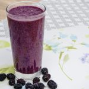

Nyomtatás
Hűsítő szeder turmix
A nyári meleg napokon kinek ne esne jól egy igazán ízletes és hűsítő szeder turmix. A szeder igazi csodaszer, hiszen vitaminokban gazdag, így igencsak erősíti a szervezetet. Kiváló antioxidáns forrás, serkenti az agyműködést, javítja az emésztést, jót tesz a bőrnek és még sorolhatnánk tovább jótékony hatásait.
Adag: 2 adag
Hozzávalók
- 2 marék friss vagy fagyasztott szeder
- 2 dl tej
Elkészítés
- Friss szeder esetén mossuk meg a gyümölcsöket, szárát vágjuk le, majd tegyük a turmixgépbe. A fagyasztott változat esetében a gyümölcsöket csak dobjuk bele a gépbe.
- Adjuk hozzá a tejet, és turmixoljuk össze a két hozzávalót.
- Öntsük magas falú pohárba, díszítsük még 3-4 szem friss szederrel és adjunk hozzá jeget.